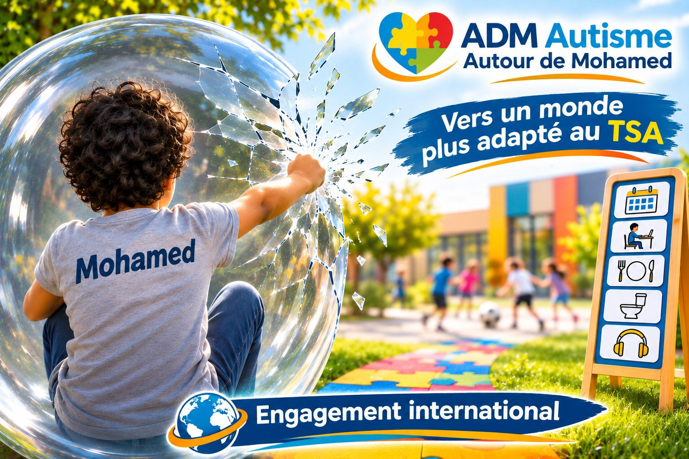

Association ADM Autisme – Autour de Mohamed
Outiller les familles pour qu'elles avancent par elles-mêmes
Faire valoir les droits de votre enfant, comprendre et accompagner l'autisme au quotidien, partager notre expérience au-delà des frontières : tout part de notre histoire avec notre fils Mohamed.
Grégory Porte, président de l'association et consultant en autisme
ADM Autisme – Autour de Mohamed
Notre association est née en 2014, autour de notre fils Mohamed. Autiste sévère et non oralisant, il vit aussi avec plusieurs maladies venues s'ajouter au fil des années. Nos premiers dossiers MDPH ont été refusés, encore et encore : notre situation était grave, mais nous ne savions pas l'exprimer.
Nous avons appris à nous outiller et à nous appuyer sur la loi. Puis nous avons aidé d'autres familles à monter leurs dossiers : plus de 90 % de leurs demandes ont été acceptées, en première demande ou après recours.
Ce site transmet ce que nous avons appris, pour que chaque famille puisse se débrouiller par elle-même.